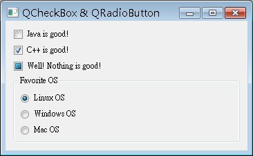

核
取方塊（CheckBox）是可以進行選項複選的元件，單選鈕（RadioButton）是只能進行選項單選的元件，在Qt中分別使用QCheckBox
與QRadioButton來負責，QRadioButton必須使用QGroupBox來加以群組，來表示哪些選項為一個群組，彼此互斥，同時間只能選
擇一個。
以下是個簡單的元件配置示範：
#include <QApplication>
#include <QWidget>
#include <QButtonGroup>
#include <QCheckBox>
#include <QRadioButton>
#include <QGroupBox>
#include <QVBoxLayout>
int main(int argc, char *argv[]) {
QApplication app(argc, argv);
QWidget *window = new QWidget;
window->setWindowTitle("QCheckBox & QRadioButton");
window->resize(350, 100);
QVBoxLayout *windowLayout = new QVBoxLayout;
// 核取方塊
QCheckBox *check1 = new QCheckBox;
check1->setChecked(true);
check1->setText("Java is good!");
QCheckBox *check2 = new QCheckBox("C++ is good!");
QCheckBox *check3 = new QCheckBox("Well! Nothing is good!");
check3->setTristate(true);
windowLayout->addWidget(check1);
windowLayout->addWidget(check2);
windowLayout->addWidget(check3);
// 單選鈕
QGroupBox *box = new QGroupBox("Favorite OS");
QRadioButton *radio1 = new QRadioButton("Linux OS");
QRadioButton *radio2 = new QRadioButton("Windows OS");
QRadioButton *radio3 = new QRadioButton("Mac OS");
QVBoxLayout *radioLayout = new QVBoxLayout;
radioLayout->addWidget(radio1);
radioLayout->addWidget(radio2);
radioLayout->addWidget(radio3);
// 三個單選鈕為一個群組
box->setLayout(radioLayout);
windowLayout->addWidget(box);
window->setLayout(windowLayout);
window->show();
return app.exec();
}
QCheckBox除了預設的核取與非核取狀態之外，還可以第三個狀態，這可以使用setTristate()方法來設定，而
單選鈕的配置部份，首先將單選鈕元件加入QVBoxLayout中作版面配置，然後設定其為QGroupBox的版面管理，如此一來，
QVBoxLayout中的三個單選鈕就是在同一個群組之中。
下圖為執行的參考畫面，其中第三個核取方塊為第三個選中狀態，預設的核取與非核取狀態可以使用isChecked()來得知，第三個選中狀態可以使用isTristate()來得知：

|
|